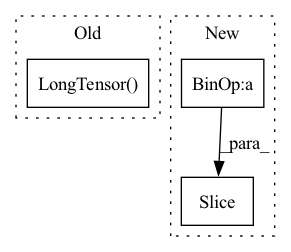

Pattern ID :16725
Before Change
if self.speaker_embedding:
for datapoint in tqdm(self.datapoints):
tensored_datapoints.append([torch.Tensor(datapoint[0]),
torch.LongTensor( datapoint[1]) ,
torch.Tensor(datapoint[2]),
torch.LongTensor(datapoint[3]),
torch.LongTensor(datapoint[4]),After Change
process_list = list()
for i in range(loading_processes):
datapoint_splits.append(dataset[i * len(dataset) // loading_processes:(i + 1) * len(dataset) // loading_processes])
norm_wave_splits.append(norm_waves[i * len(norm_waves) // loading_processes:(i + 1) * len(norm_waves) // loading_processes ])
for index, _ in enumerate(datapoint_splits):
process_list.append(Process(target=self.cache_builder_process,
args=(datapoint_splits[index],In pattern: SUPERPATTERN
Frequency: 3
Non-data size: 3
Instances Fragment ID: 55973382
Project Name: digitalphonetics/ims-toucan
Commit Name: d75af2f091227a4695d4887a9a8f23dc5d22b12b
Time: 2021-09-15
Author: florian.lux@ims.uni-stuttgart.de
File Name: TrainingInterfaces/Text_to_Spectrogram/FastSpeech2/FastSpeechDataset.py
M Class Name: FastSpeechDataset
N Class Name: FastSpeechDataset
M Method Name: __init__(13)
N Method Name: __init__(13)
M Parent Class: Dataset
N Parent Class: Dataset
M File Name: TrainingInterfaces/Text_to_Spectrogram/FastSpeech2/FastSpeechDataset.py
N File Name: TrainingInterfaces/Text_to_Spectrogram/FastSpeech2/FastSpeechDataset.py
M Start Line: 36
M End Line: 96
N Start Line: 36
N End Line: 109
Before Change
self.cached_text.append(tf.string_to_tensor(transcript).long())
self.cached_text_lens.append(torch.LongTensor([len(self.cached_text[-1])]))
self.cached_speech.append(ap.audio_to_mel_spec_tensor(wave).transpose(0, 1))
self.cached_speech_lens.append(torch.LongTensor( [len(self.cached_speech[-1])]) )
if self.spemb:
print("not implemented yet")
raise NotImplementedErrorAfter Change
key_splits = list()
thread_list = list()
for i in range(loading_threads):
key_splits.append(key_list[i * len(key_list) / loading_threads:i + 1 * len(key_list) / loading_threads ])
for key_split in key_splits:
thread_list.append(Thread(target=self.cache_builder_thread, args=(key_split,)))
thread_list[-1].start() Fragment ID: 55973378
Project Name: digitalphonetics/ims-toucan
Commit Name: 21527c7e2ea36abafa7885cef64519affbb0e587
Time: 2021-03-01
Author: florian.lux@ims.uni-stuttgart.de
File Name: TransformerTTS/TransformerTTSDataset.py
M Class Name: TransformerTTSDataset
N Class Name: TransformerTTSDataset
M Method Name: __init__(6)
N Method Name: __init__(5)
M Parent Class: Dataset
N Parent Class: Dataset
M File Name: TransformerTTS/TransformerTTSDataset.py
N File Name: TransformerTTS/TransformerTTSDataset.py
M Start Line: 14
M End Line: 51
N Start Line: 15
N End Line: 47
Before Change
if isinstance(X, torch.Tensor):
n: int = X.shape[0]
te: int = round(n * test_size)
split = random_split(torch.LongTensor( range(n)) ,
[n - te, te],
generator=torch.Generator().manual_seed(seed))
self.Xtr, self.ytr = X[split[0], :], y[split[0], :]After Change
// generator=torch.Generator().manual_seed(seed))
torch.manual_seed(seed)
perm = torch.randperm(n)
split = perm[:n-te], perm[n-te: ]
self.Xtr, self.ytr = X[split[0], :], y[split[0]]
self.Xte, self.yte = X[split[1], :], y[split[1]]
else: Fragment ID: 55973369
Project Name: makgyver/gossipy
Commit Name: 31a93a404f8bfba3869c5eb733962a438f4806f0
Time: 2021-08-29
Author: mak1788@gmail.com
File Name: gossipy/data/handler.py
M Class Name: ClassificationDataHandler
N Class Name: ClassificationDataHandler
M Method Name: __init__(5)
N Method Name: __init__(5)
M Parent Class: DataHandler
N Parent Class: DataHandler
M File Name: gossipy/data/handler.py
N File Name: gossipy/data/handler.py
M Start Line: 22
M End Line: 28
N Start Line: 22
N End Line: 29